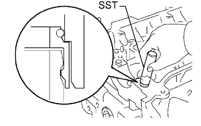
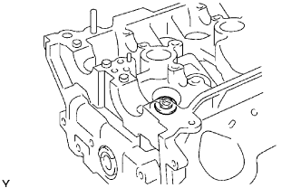
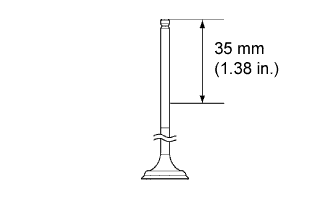
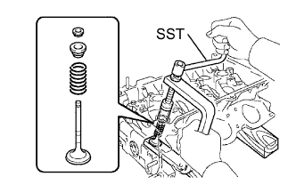
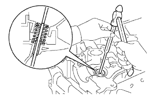
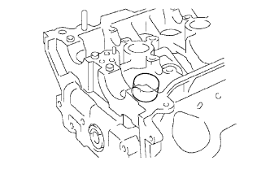

CYLINDER HEAD > REASSEMBLY |
| 1. INSTALL VALVE STEM OIL SEAL |
 |
Apply a light coat of engine oil to the valve stem oil seal.
 |
Using SST, push in a new valve stem oil seal.
| 2. INSTALL VALVE SPRING SEAT |
 |
Install the valve spring seat.
| 3. INSTALL VALVE |
 |
Apply plenty of engine oil to the tip area of the exhaust valve shown in the illustration.
 |
Place the cylinder head on wooden blocks.
Install the valve, inner compression spring and valve spring retainer to the cylinder head.
Using SST, compress the inner compression spring and place the valve spring retainer lock around the valve stem.
 |
Using a pin punch 5 and hummer, lightly tap the valve stem tip to ensure a proper fit.
| 4. INSTALL VALVE LIFTER |
 |
Apply engine oil to the valve stem end and valve lifter, and install the valve lifter to the valve stem.
Check that the valve lifter rotates smoothly by hand.